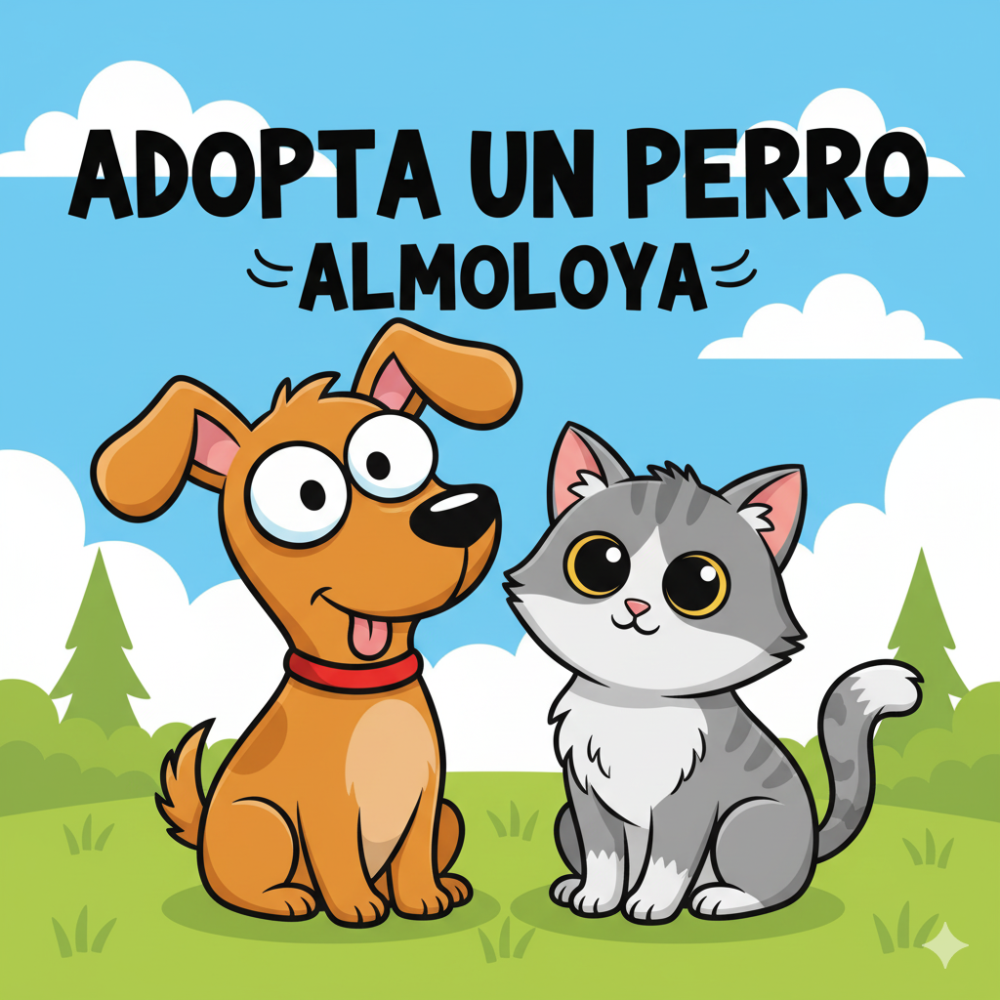
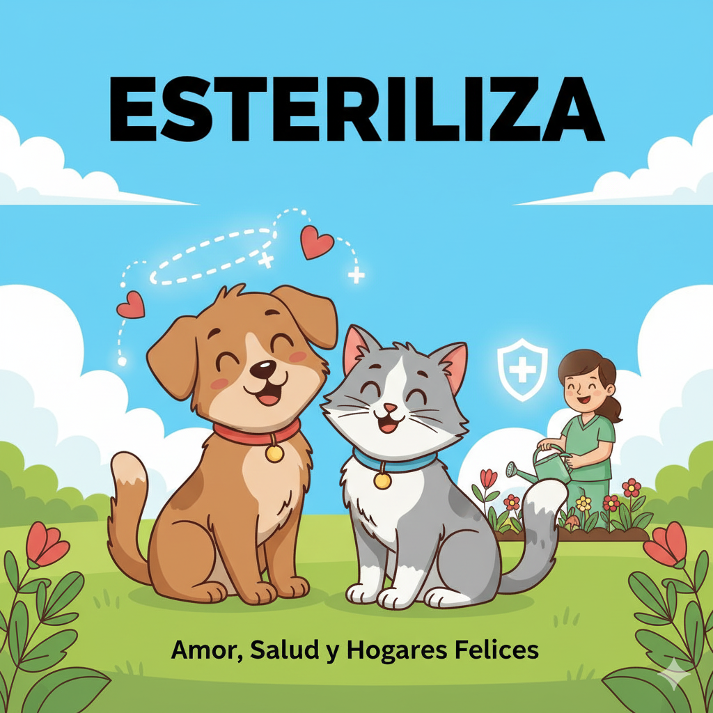
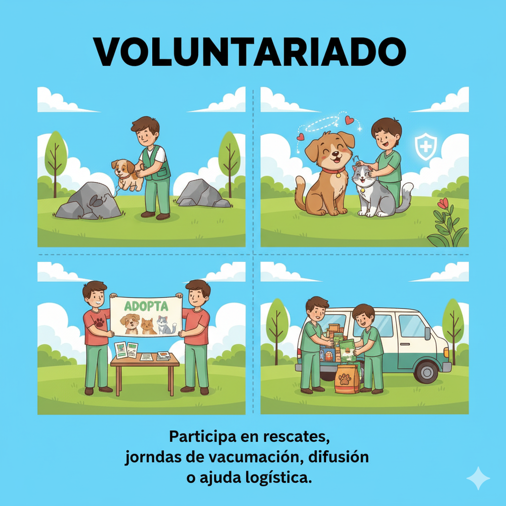

Bienvenido a Amigo Huellitas
Este proyecto escolar busca **informar, movilizar y facilitar acciones concretas** para reducir el número de animales en situación de calle en México.

Nuestros Pilares de Acción:
- • Educación: Promover campañas para la tenencia responsable de mascotas.
- • Esterilización: Organizar jornadas a bajo costo o gratuitas.
- • Rescate y Adopción: Conectar a rescatistas con hogares responsables y amorosos.
Sobre la Problemática Animal
La presencia de animales en situación de calle es una problemática multifacética que afecta tanto al **bienestar animal** como a la sociedad en general. Los perros y gatos callejeros viven en condiciones precarias, sin acceso a alimento, agua limpia ni atención veterinaria, lo que los hace vulnerables a enfermedades, accidentes y maltrato. Además, enfrentan peligros constantes como el tráfico y el clima extremo.
Causas Principales
- Falta de Esterilización Accesible: La dificultad para costear la esterilización resulta en una sobrepoblación y más animales callejeros.
- Desinformación y Tenencia Irresponsable: El desconocimiento de los cuidados y compromisos a largo plazo que implica una mascota, lo que fomenta el abandono.
- Abandono por Razones Económicas o de Vivienda: Las dificultades financieras o mudanzas son causas frecuentes del abandono.
- Reproducción Accidental: La falta de castración provoca camadas no deseadas que aumentan la población callejera.
Efectos y Soluciones Éticas
La sobrepoblación animal en las calles genera **riesgos sanitarios** (como enfermedades zoonóticas), **accidentes de tránsito** y un alto nivel de **sufrimiento animal**. Frente a esto, las políticas éticas y los programas de esterilización han demostrado ser la solución más efectiva:
- Reducen la cantidad de animales abandonados.
- Mejoran la salud pública.
- Promueven una convivencia más segura y compasiva.
Estos programas, cuando se aplican con seguimiento adecuado, generan beneficios sostenibles tanto para las comunidades como para los animales.
¡Tú Puedes Hacer la Diferencia!
Adopta Responsablemente
Dale un hogar a un animal rescatado en lugar de comprar. Prepárate para el compromiso y los cuidados a largo plazo.
Esteriliza a tu Mascota
Busca clínicas y jornadas de esterilización; es la medida **más efectiva** para controlar la población y evitar el abandono.
Sé Voluntario
Participa en rescates, jornadas de vacunación, difusión o ayuda logística de la causa animal.
Ideas de Acción Rápida
- **Coloca agua y alimento** en lugares seguros y accesibles para los animales de calle.
- **Comparte adopciones verificadas** en redes y evita la difusión de animales no verificados o la promoción de la compra.
- **Apoya económicamente** a refugios y organizaciones con probada transparencia.
Datos y Estadísticas Clave (México)
Población Estimada de Animales sin Hogar
≈ 27.9 Millones
(Perros y gatos)
Porcentaje de Perros Esterilizados
≈ 32%
(En una ciudad representativa)
Porcentaje de Gatos Esterilizados
≈ 40%
(En una ciudad representativa)
Análisis Detallado de la Situación
En México, la población de animales en situación de calle ha alcanzado cifras alarmantes. De acuerdo con el Índice de Mascotas sin Hogar 2024 (Mars Petcare), se estima que existen alrededor de **27.9 millones de perros y gatos** viviendo en las calles. Un reporte adicional (OEM, 2024) indica que cerca del **70% de los 28 millones de perros** del país se encuentran en situación de calle, lo que convierte a México en uno de los países con mayor número de animales sin hogar en Latinoamérica.
En cuanto a la esterilización, un estudio de Humane Society International México (HSI) en Aguascalientes reveló que solo el **32% de los perros y el 40% de los gatos han sido esterilizados**. Esto evidencia una carencia importante de programas públicos accesibles y una falta de conciencia sobre la tenencia responsable.
Estas cifras demuestran que la **falta de esterilización accesible**, la **desinformación**, el **abandono** y la **reproducción accidental** son las principales causas del incremento de animales callejeros. Las organizaciones protectoras insisten en la necesidad de **campañas permanentes de esterilización, educación y adopción responsable** para mitigar esta grave problemática.
Fuentes Consultadas:
- Mars Petcare – Índice de Mascotas sin Hogar 2024 (vía El Imparcial, 19 de agosto de 2024).
- Organismo Editorial Mexicano (OEM, 2024) – “Día Mundial del Perro: hay 28 millones de perros en México, el 70% en situación de calle”.
- Humane Society International México (HSI, 2024) – “Encuesta sobre bienestar animal y acceso a la esterilización”.
Galería de Acción y Rescates
Rescate de 16 Animales en Azcapotzalco
La **Brigada de Vigilancia Animal (BVA)** de la Ciudad de México rescató **15 gatos y 1 perro Pitbull** abandonados en jaulas en la colonia Industrial Vallejo. Los animales fueron trasladados a Xochimilco para su atención veterinaria y posterior adopción.
Otros Casos Destacados:- **Rescate en Coyoacán:** La BVA liberó a una perrita atrapada entre dos muros, realizando una peligrosa operación de rescate.
- **Proceso de Adopción:** Los animales rescatados reciben tratamiento y se ponen en adopción. El proceso requiere **identificación, comprobante de domicilio y Contrato de Adopción**.

Jornadas de Esterilización
El pasado 10 de octubre, Almoloya de Juárez realizó una exitosa jornada de esterilización gratuita para perros y gatos. Gracias a la labor coordinada de veterinarios y voluntarios, se logró atender a 18 mascotas para combatir la sobrepoblación y el abandono. La iniciativa fue celebrada por la comunidad como un acto de responsabilidad y amor por los animales, reforzando el mensaje de que la esterilización es la herramienta más efectiva para el bienestar animal.
Historias de Adopción Feliz
Cerca del Nevado de Toluca, en Almoloya de Juárez, un majestuoso bóxer atigrado fue encontrado abandonado, traumatizado y temeroso. Los voluntarios de "Amigo Huellitas" lo rescataron, le brindaron atención y la vital esterilización, poniéndolo en adopción bajo el nombre de "Gris". A pesar de ser un perro noble, su profunda tristeza lo hacía invisible para la mayoría de los adoptantes. Su destino cambió un sábado, cuando la familia Torres visitó el refugio. La hija, Daniela, se sentó en silencio junto a la reja y tarareó una melodía. Por primera vez, el perro se acercó, estableciendo una conexión instantánea. Adoptado y rebautizado como Humo, encontró su hogar en Almoloya. Con paciencia y amor, Humo pasó de ser un animal asustado a un compañero juguetón y lleno de vida. Su historia es un poderoso ejemplo para la comunidad de Almoloya de Juárez sobre cómo la adopción responsable transforma vidas y ofrece una segunda oportunidad llena de amor.
Contáctanos
Si deseas colaborar, unirte al voluntariado o necesitas reportar un caso urgente de maltrato o abandono animal, utiliza el siguiente formulario.
NUESTRAS REDES SOCIALES:


NÚMEROS DE CONTACTO:
7121807499